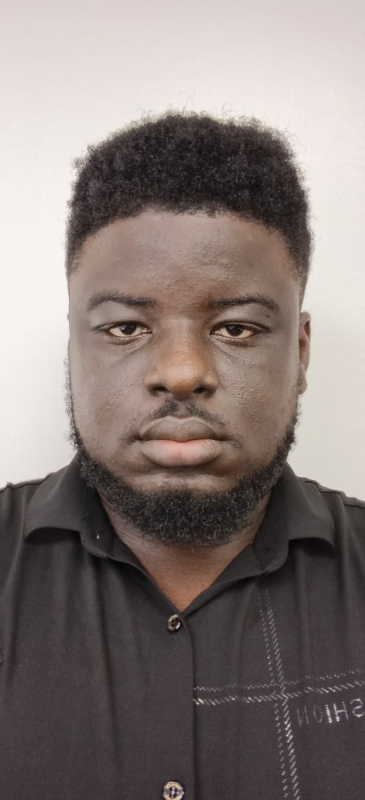

Cybersecurity
Security fundamentals and ethical hacking.
Welcome to my student portfolio. My name is Hassan Ore-Oluwa Joseph, a Computer Science student with a strong interest in cybersecurity, software development, computer technology, and entrepreneurship. This website showcases my academic journey, technical skills, projects, and professional interests.

Security fundamentals and ethical hacking.
Building practical, useful web solutions.
Computer setup, repairs and troubleshooting.
Building technology-driven services.
I am a Computer Science student passionate about using technology to solve real-world problems. My interests cover cybersecurity, web development, computer systems, software solutions, and technical support. I also enjoy learning new technologies and developing practical solutions that can improve the way people work and stay safe.
Alongside my academic studies, I am building practical experience through cybersecurity training, technology projects, computer support, and entrepreneurship. My long-term goal is to develop strong technical expertise and build technology-driven solutions that create meaningful value.
Interested in working together or have a question? Get in touch.
Contact Me